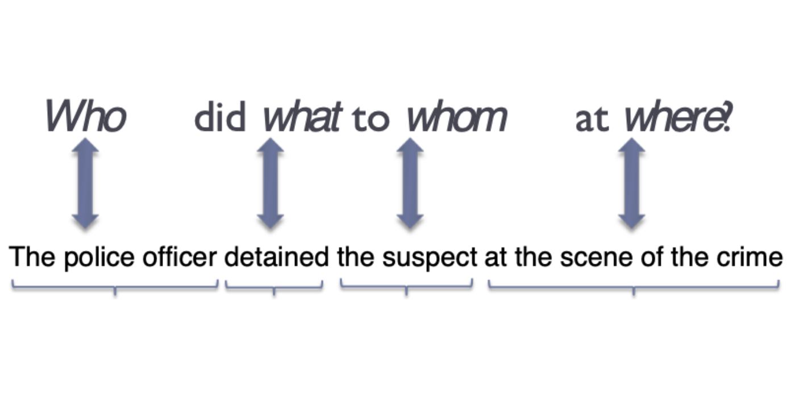

Fundamental and Most Recent Projects
Food Rating App For AI Generated Recipes
View on GitHubCollaborated with a team of four to develop a cloud-based application leveraging AWS, Angular, and the OpenAI API to generate AI-powered recipes and facilitate user ratings. The application integrates over four microservices and two PostgreSQL databases to efficiently handle recipe generation, data storage, and user interaction.
Edge Detector and Coin Identifier
View on GitHubDeveloped a custom Non-Maximal Suppression and Hough Accumulator algorithm from scratch to detect edges in images effectively. Designed and implemented a robust coin identification system achieving approximately 88% accuracy in noisy images and 100% accuracy in clean conditions.

Generative Live Music Using GPT
View on GitHubIntegrate Sonic Pi live coding music with GPT to create an interactive music-generation experience. By combining live coding with AI, users can generate, customize, and experiment with dynamic music compositions in real-time.
Optimization of 2048 Game
View on GitHubImplemented minmax search algorithm and merge, snake, smoothness, and monotonic heuristics to achieve a maximizing score of 4096 in the 2048 Game (previously scoring 256).
Sign Language Identifier
View NotebookDeveloped a custom Non-Maximal Suppression and Hough Accumulator algorithm from scratch to detect edges in images effectively. Designed and implemented a robust coin identification system achieving approximately 88% accuracy in noisy images and 100% accuracy in clean conditions.
Semantic Role Labeling Generator
View NotebookFine-tuned the BERT language model to perform semantic role labeling, a task that identifies the roles words play in sentences (e.g., who performed an action and on what). Using Google Cloud Platform and PropBank data, the model achieved over 94% accuracy in analyzing such roles.
Older/Experimental Projects
Integer Calculator
View on GitHubConstructed right-associative calculator with PEMDAS integration.
Textual Frequency Analysis
View on GitHubUsed 3+ data structures to analyze runtimes of processing word frequencies in long texts (>780,000 words).
Poker Game
View on GitHubConstructed user-interactive video poker game, allowing each player to bet up to 5 tokens
Nim Game
View on GitHubUser-interactive game where the objective is to strategic object-remove objects for last-item avoidance between user and computer
Python: Sudoku Solver
View on GitHubSudoku Solver using backtracking algorithm (can solve hardest sudoku in under 10 seconds!)
MIPS: Sudoku Solver
View on GitHubEnhanced Sudoku Solver in Assembly Language Featuring a range of advanced techniques.
N-Puzzle Game
View on GitHubImplementation of several search Algorithms to solve N-puzzle game.
Chatbot Server/Client
View on GitHubCrafted a client/server application by adopting TCP socket networking, signal handling, and execvp/forking processes.
Linux Shell
View on GitHubProgrammed core Linux commands including “cd” and “mkdir” (ensured support for file paths/directories with quotation marks). Incorporated error handling for non-existent files and incorrect command inputs.
To Do List App
View on GitHubSelf-learn and implement User Interface Design with the MVVM model to create a to-do list app (based on the structure of the general iPhone Notes app).
Dorm Selection App
View on GitHubDorm App (upload pictures of current dorm rooms to help students select ideal housing options) Features: Integrating Google Maps SDK from Google Cloud Platform for dorm location, uploading photos integration.